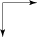
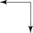
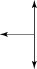
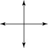
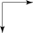
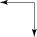
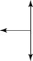
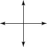

Uma pessoa de massa igual a

A melhor representação gráfica para as distintas forças externas que atuam sobre a pessoa está indicada em:
(A)

(B)

(C)

(D)

Uma pessoa de massa igual a
A melhor representação gráfica para as distintas forças externas que atuam sobre a pessoa está indicada em:
(A)

(B)

(C)

(D)

Alternativa correta: (D)
A resultante das forças que agem sobre a pessoa é nula, pois ela se encontra em equilíbrio mecânico.